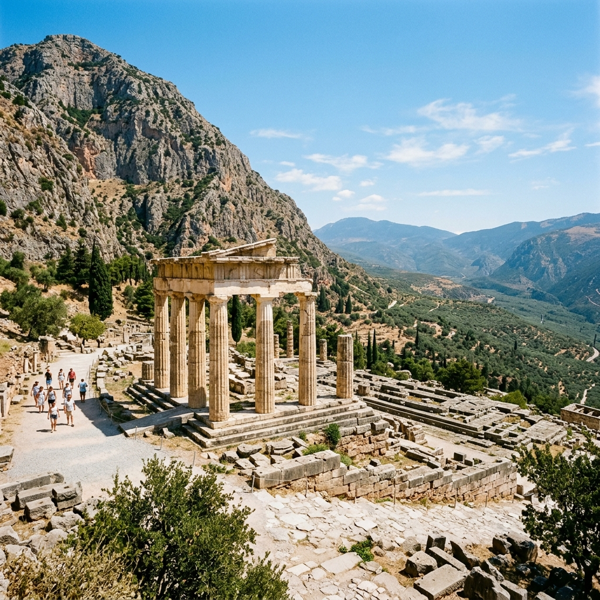
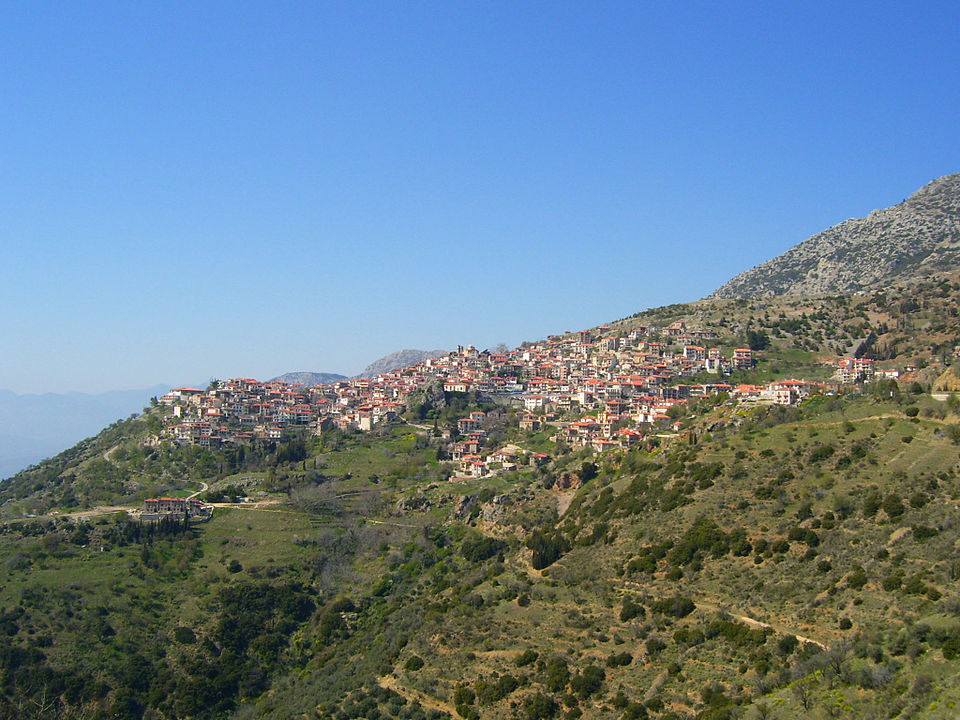

Taxi & Van Transfers
Reisen Sie zum „Nabel der Welt“ und tauchen Sie ein in die Mystik des antiken Griechenlands.
Machen Sie eine Zeitreise mit einem Ganztagesausflug nach Delphi, das von den alten Griechen als Zentrum der Welt angesehen wurde. Eingebettet in die Hänge des Berges Parnass ist Delphi eine der beeindruckendsten UNESCO-Welterbestätten in Griechenland.
Auf diesem privaten Tagesausflug werden Sie den Apollontempel bestaunen, in dem das berühmte Orakel seine Prophezeiungen verkündete, das antike Theater erkunden und unglaubliche Artefakte im Archäologischen Museum von Delphi sehen. Die Route führt Sie auch durch malerische Berglandschaften und traditionelle Dörfer.
Das Heiligtum des Orakels
Malerisches Bergdorf
Beginnen Sie Ihren Tag früh, wenn Ihr privater Fahrer Sie in einem klimatisierten Premium-Fahrzeug von Ihrem Standort in Athen abholt.
Genießen Sie eine entspannte Fahrt durch die fruchtbare Ebene von Böotien, vorbei an den Städten Theben und Levadia, bevor Sie den majestätischen Berg Parnass erklimmen.
Kommen Sie in Delphi an, um die unglaublichen Ruinen zu erkunden. Gehen Sie den Heiligen Weg, besuchen Sie den Apollontempel, das antike Theater und das Stadion, in dem die Pythischen Spiele stattfanden.
Entdecken Sie Meisterwerke der antiken griechischen Bildhauerei, darunter den berühmten bronzenen Wagenlenker und die Sphinx von Naxos.
Halten Sie im schönen Bergdorf Arachova für ein traditionelles griechisches Mittagessen (optional) und einen Souvenir-Einkauf, bevor wir unsere bequeme Rückfahrt nach Athen antreten.

